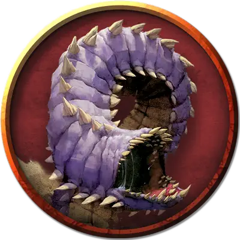

Детёныш лилового червя
Purple Wormling
Большой Монстр, без мировоззрения

Класс Доспеха 12 (природный доспех)
Хиты 42 (5к10 + 15)
Скорость 20 футов
| мод | спас | ||
|---|---|---|---|
| СИЛ | 16 | +3 | +3 |
| ЛОВ | 7 | −2 | −2 |
| ТЕЛ | 16 | +3 | +3 |
| мод | спас | ||
|---|---|---|---|
| ИНТ | 1 | −5 | −5 |
| МДР | 6 | −2 | −2 |
| ХАР | 2 | −4 | −4 |
Чувства слепое зрение 30 футов, пассивное Восприятие 8, чувство вибрации 30 футов
Опасность 2 (450 опыта)
Бонус мастерства +2
Действия
Мультиатака. Детёныш проводит две атаки: одну своим укусом и одну - жалом.
Укус. . Рукопашная атака оружием: +5 к попаданию, досягаемость 5 футов, одна цель. Попадание: 7 (1к8+3) колющий урон и если целью было существо Маленького размера или меньше, оно должно преуспеть в спасброске Ловкости Сл 13 или будет проглочено детёнышем червя. Проглоченное существо ослеплено и опутано, у него полное укрытие против атак и прочих эффектов извне детёныша червя и получает урон кислотой 3 (1к6) в начале каждого хода детёныша червя.
Если детёныш червя получает 10 или более урона за один ход от существа внутри него, детёныш червя должен преуспеть в спасброске Телосложения Сл 21 в конце этого хода или изрыгнуть всех проглоченных существ, которые падают сбитые с ног в клетке в 10 футах от детёныша червя. Если детёныш умирает, проглоченное существо более не опутано им и может сбежать из трупа использовав 5 футов передвижения, чтобы выползти (оставаясь в состоянии сбит с ног).
Хвостовое жало. Рукопашная атака оружием: +5 к попаданию, дальность 5 футов, одно существо. Попадание: 5 (1к4+3) колющего урона и цель должна преуспеть в спасброске Телосложения Сл 13. При провале цель получает 10 (3к6) урона ядом и только половину этого урона при успешном спасброске.
Описание
Детеныш лилового червя возрастом не больше шести недель. У него эластичное тело в 9 футов длиной и весом в 1,500 фунтов. Его рот и мускулатура недостаточно развита, чтобы детеныш мог бурится сквозь скалу. Яд в его жале на хвосте и кислота в его пищеводе все ещё достаточно слабы. Тем не менее, детеныш жадный едок и атакует все, что может поместить себе в рот. Детеныш лилового червя может проглотить за раз до четырех Маленьких существ.